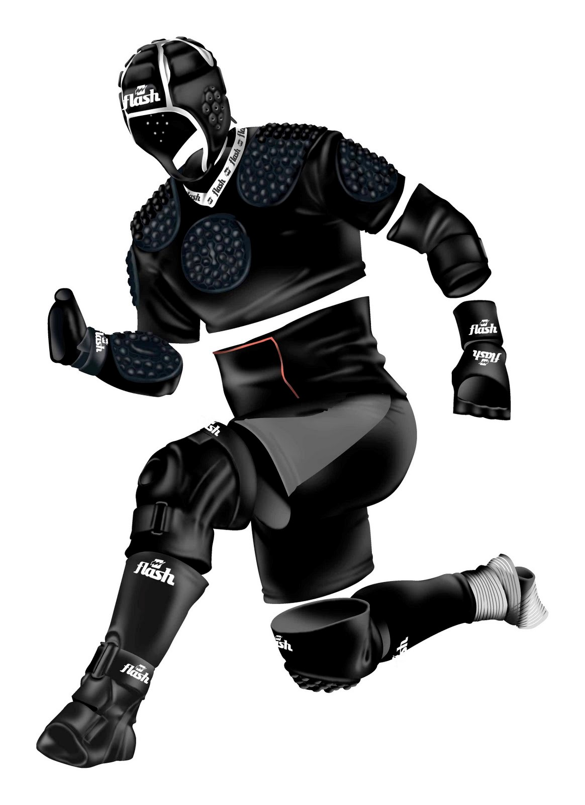
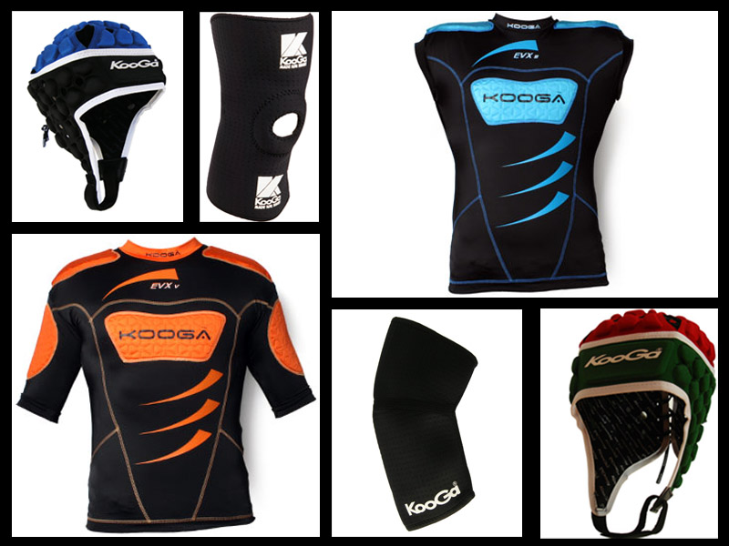

En un partido de rugby, los jugadores son propensos al choque físico la mayor parte del tiempo. Este deporte consiste en eso. La defensa debe “tacklear” al atacante, siempre y cuando sea de manera lícita. Los golpes en el tren superior del cuerpo (cabeza, cuello, hombros) son frecuentes. A diferencia del fútbol, los rugbiers no reciben tanto castigo en las piernas. Por esta razón, muchos utilizan indumentaria de protección (no rígida), como lo son los protectores bucales, las hombreras, el antebrazo adherente, el casco y los guantes. A continuación, explicamos la función de cada uno de estas protecciones para el juego y su importancia en la prevención de lesiones.
PROTECTOR BUCAL
Lo primero que hay que destacar es que es el único objeto de protección obligatorio (por reglamento) que deben usar los jugadores. Los golpes en la boca son habituales, por lo que la IRB prohíbe jugar sin protector bucal. La función que cumple es evitar la pérdida o caída de un diente y los traumatismos de cráneo.
HOMBRERA
Como el nombre lo indica, sirve para cubrir los hombros, una de las partes del cuerpo que más sufren los jugadores de rugby. No es obligatoria, pero si se usa no debe superar los 5 mm de espesor. Está conformada por un relleno de goma que varía el espesor y que funciona como amortiguador de los golpes.
HOMBRERA TERMOFORMADA
A diferencia de la anterior, ésta cubre el pecho, los brazos y los hombros. Se utiliza pegada al cuerpo, y está hecha con el mismo material que la hombrera simple (goma).
CASCO
A pesar de que no sea una obligación reglamentaria usarlo, muchos rugbiers prefieren jugar con casco. Protege las orejas (que sufren mucho en los scrums) y también los “pisotones” en la cabeza. Tiene un cordón en la nuca que permite ajustar al tamaño de la cabeza, al igual que en el mentón, donde posee un abrojo.
ANTEBRAZO ADHERENTE
Más que para prevenir golpes, sirve para un mejor control de la pelota cuando la cancha está húmeda o mojada. La parte superior tiene goma –para tomar contacto con el rival- y la inferior facilita la adherencia al balón.
GUANTES
Cumplen una función similar al antebrazo adherente. El contacto con la pelota es fundamental, por lo que son agujereados en las puntas para una mejor administración de la misma. Además, se utilizan calzas, protectores de testículos y muchas rodilleras y cintas para dar solidez a la zona que se le quiera dar firmeza.